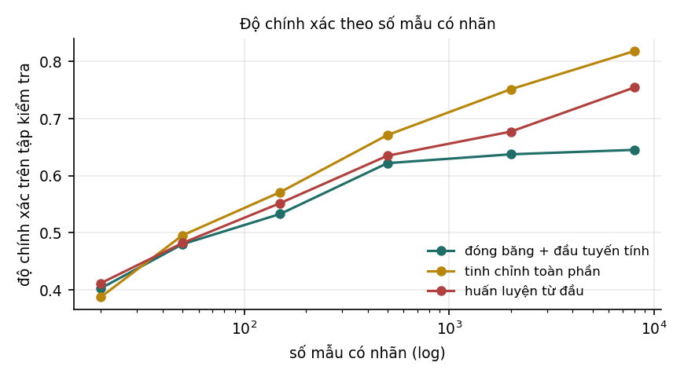

6Đóng băng và tinh chỉnh#
Thí nghiệm có kiểm soát so sánh đóng băng, tinh chỉnh toàn phần và huấn luyện từ đầu theo số mẫu có nhãn, giới hạn trên khi đặc trưng bị cố định, và các quy tắc thực hành khi tinh chỉnh.
Có một mô hình đã tiền huấn luyện và mẫu có nhãn cho nhiệm vụ của mình: nên đóng băng phần trích đặc trưng và chỉ học lớp cuối, hay cho cả mô hình học lại? Chương này trả lời bằng một thí nghiệm có kiểm soát, trong đó ba cách làm dùng cùng một cài đặt mạng, và đo độ chính xác theo số mẫu có nhãn.
6.1Câu hỏi#
Trực giác thông thường: ít dữ liệu thì đóng băng, nhiều dữ liệu thì tinh chỉnh. Lý do là đóng băng chỉ phải ước lượng một lớp tuyến tính, nên ít có nguy cơ overfitting; còn tinh chỉnh có nhiều tham số hơn nhiều, cần nhiều dữ liệu hơn, nhưng sửa được những đặc trưng chưa phù hợp. Trực giác này không cho biết ngưỡng chuyển đổi nằm ở đâu, và ngưỡng mới là điều cần biết.
6.2Thiết kế thí nghiệm#
Để so sánh có ý nghĩa, ba cấu hình phải dùng cùng một cài đặt mạng và chỉ khác nhau ở hai điểm:
| Cấu hình | Trọng số ban đầu của lớp ẩn | Lớp ẩn có được cập nhật không |
|---|---|---|
| Đóng băng, học lớp tuyến tính | tiền huấn luyện | không |
| Tinh chỉnh toàn phần | tiền huấn luyện | có |
| Huấn luyện từ đầu | ngẫu nhiên | có |
Lưu ý
Lớp
MLPClassifiercủa scikit-learn không cho nạp trọng số ban đầu, nên nếu dùng nó cho cột "tinh chỉnh toàn phần", cấu hình đó thực chất là huấn luyện từ đầu, và hai cột sẽ cho kết quả gần như trùng nhau. Đây là một lỗi thiết kế thí nghiệm dễ mắc: tên cấu hình không khớp với việc mã thực sự làm. Thí nghiệm ở đây tự cài một mạng một lớp ẩn bằng NumPy để kiểm soát được trọng số khởi tạo.
Dữ liệu mô phỏng tình huống thực tế: đầu vào 40 chiều, lớp ẩn 24 đơn vị tanh, 4 lớp. Nhãn được sinh bởi một phép chiếu "thật" theo sau là một lớp tuyến tính, cộng nhiễu. Mô hình "tiền huấn luyện" dùng cộng nhiễu, tức đặc trưng gần đúng nhưng không trùng khớp với nhiệm vụ đích, như quan hệ giữa một mô hình tiền huấn luyện và nhiệm vụ cụ thể trong thực tế. Độ chính xác đo trên 4 000 mẫu kiểm tra; mỗi cấu hình chạy một lần với mỗi cỡ dữ liệu.
6.3Kết quả#

| Số mẫu có nhãn | Đóng băng, học lớp tuyến tính | Tinh chỉnh toàn phần | Huấn luyện từ đầu |
|---|---|---|---|
| 20 | 0,4027 | 0,3875 | 0,4118 |
| 50 | 0,4800 | 0,4955 | 0,4820 |
| 150 | 0,5330 | 0,5713 | 0,5520 |
| 500 | 0,6220 | 0,6713 | 0,6350 |
| 2 000 | 0,6375 | 0,7515 | 0,6773 |
| 8 000 | 0,6452 | 0,8183 | 0,7545 |
Bảng có ba điểm cần đọc.
Với 20 và 50 mẫu, ba cấu hình không phân biệt được. Với 20 mẫu và 4 lớp, mỗi lớp chỉ có khoảng 5 mẫu, và mỗi cấu hình chỉ chạy một lần; chênh lệch 0,01 tới 0,02 giữa các cột nằm trong mức dao động giữa các lần chạy. Không nên rút ra kết luận nào từ hai hàng đầu. Đặc biệt, bảng không cho thấy đóng băng thắng khi ít dữ liệu, dù đó là điều trực giác dự đoán.
Từ 150 mẫu trở lên, tinh chỉnh toàn phần vượt hai cách còn lại, và khoảng cách tăng dần: 0,04 ở 150 mẫu, 0,11 ở 2 000 mẫu, 0,17 ở 8 000 mẫu so với đóng băng. Đặc trưng tiền huấn luyện chỉ gần đúng với nhiệm vụ, nên khi có đủ dữ liệu, sửa chúng có lợi hơn nhiều so với chỉ học một lớp tuyến tính phía trên.
Cột đóng băng gần như không tăng từ 500 mẫu trở đi (0,622; 0,638; 0,645). Khi đặc trưng bị cố định, mô hình chỉ còn là hồi quy softmax trên các đặc trưng đó. Thêm dữ liệu giúp ước lượng lớp tuyến tính chính xác hơn, nhưng không vượt được giới hạn do chính các đặc trưng đặt ra. Theo ngôn ngữ của Mục 2.4 của Học sâu, đây là tình trạng độ chệch cao: nếu đang đóng băng mà thêm dữ liệu không cải thiện độ chính xác, thêm nữa cũng không giúp, và cần cho phép cập nhật các lớp phía dưới.
Ngoài ra, tinh chỉnh tốt hơn huấn luyện từ đầu ở mọi cỡ dữ liệu từ 150 mẫu trở lên, kể cả ở 8 000 mẫu (0,818 so với 0,755). Trọng số tiền huấn luyện không chỉ hữu ích khi thiếu dữ liệu; chúng là một điểm khởi đầu tốt hơn cho tối ưu.
6.4Quy tắc thực hành#
Các quy tắc sau là kinh nghiệm phổ biến, không phải kết quả đo trong giáo trình:
- Tốc độ học khi tinh chỉnh nhỏ hơn nhiều so với khi huấn luyện từ đầu, thường nhỏ hơn 10 tới 100 lần. Trọng số hiện tại đã tốt, và bước cập nhật lớn có thể phá hỏng những gì đã học trước khi kịp học điều mới.
- Mở đóng băng dần từ các lớp trên xuống thường ổn định hơn mở tất cả cùng lúc (Howard và Ruder, 2018). Các lớp gần đầu vào học những đặc trưng chung nhất và ít cần sửa nhất.
- Tinh chỉnh trên ít dữ liệu có thể gây quên thảm hoạ (catastrophic forgetting; McCloskey và Cohen, 1989): mô hình mất khả năng ở những việc nó từng làm được. Nếu điều đó quan trọng, có thể trộn một phần dữ liệu của miền gốc vào dữ liệu tinh chỉnh, hoặc dùng LoRA (Chương 7), vốn giữ nguyên trọng số gốc.
Tự kiểm tra
3 câu. Chọn đáp án để xem ngay lời giải thích.
1Trong thí nghiệm ở Mục 6.3, từ khoảng bao nhiêu mẫu có nhãn thì tinh chỉnh toàn phần vượt rõ các cách khác?
Vì sao: Với 20 và 50 mẫu, ba cách không phân biệt được. Từ 150 mẫu, tinh chỉnh toàn phần vượt lên và khoảng cách tăng dần, tới 0,17 so với đóng băng ở 8 000 mẫu.2Điều gì xảy ra với cách đóng băng khi dữ liệu tăng từ 500 lên 8 000 mẫu?
Vì sao: Khi đặc trưng bị cố định, mô hình chỉ còn là hồi quy softmax trên các đặc trưng đó. Thêm dữ liệu không vượt được giới hạn của đặc trưng; đây là tình trạng độ chệch cao.3Vì sao thí nghiệm ở Mục 6.2 tự cài mạng bằng NumPy thay cho
MLPClassifiercủa scikit-learn?Vì sao: Tên cấu hình phải khớp với việc mã thực sự làm; nếu không, so sánh giữa hai cột trở nên vô nghĩa.
Đã trả lời 0/3